|
|
| crabs text index | photo index |
| Phylum Arthropoda > Subphylum Crustacea > Class Malacostraca > Order Decapoda > Brachyurans > Family Portunidae |
| Blue
swimming crab Thalamita danae* Family Portunidae updated Dec 2019 Where seen? This blue swimming crab is commonly seen on many of our shores, especially near coral rubble and reefs. It is particularly active at night. Features: Body width 5-7cm. Body somewhat rectangular, sides of the body with 5 dark blue-light blue-brown tipped spines. Spines about equal in size, the fourth spine might be slightly smaller. The eyes are wide apart. Between the eyes are 6 rounded equal-sized lobes.The body is usually densely covered in fine hairs so that it often has a layer of sand on its body. Last pair of legs are paddle-shaped. Body and pincers plain blue or greenish blue. Pinchers long, 'fingers' are often black with a white tip, some have white patch at the base of the 'fingers', some have bright orange patches on the inner 'elbow' and at the 'shoulders'. |
 Tanah Merah, Jul 11 |
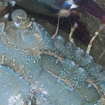 6 rounded equal-sized lobes between the eyes. |
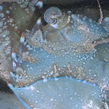 5 spines on the side of the body. Fine hairs on the body that traps sand. |
|
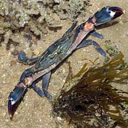 Bright orange patch on inner 'elbow'. Tuas, Apr 08 |
 Caught a Rockskipper (Istiblennius sp.) ID by Yan Le Small Sisters Island, Oct 25 Photo shared by Yan Le Su on facbeook. |

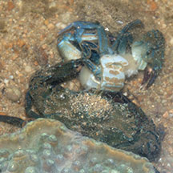 Maybe a moult? Or cannibalism?! Small Sisters Island, Oct 25 Photo shared by Yan Le Su on facbeook. |
*Species are difficult to positively identify without close examination.
On this website, they are grouped by external features for convenience of display.
| Blue swimming crabs on Singapore shores |
On wildsingapore
flickr
|
| Other sightings on Singapore shores |
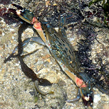 Labrador, Oct 25 Photo shared by Loh Kok Sheng on facebook. |
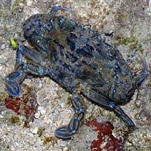 Pulau Biola, Dec 09 |
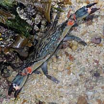 Pulau Biola, Dec 09 |
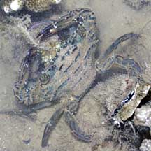 Pulau Sudong, Dec 09 |
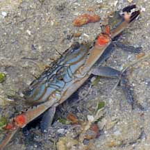 Terumbu Berkas, Jan 10 |
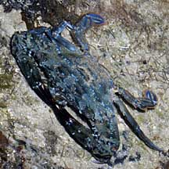 Terumbu Salu, Jan 10 |
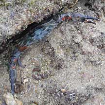 Terumbu Bukom, Nov 10 |
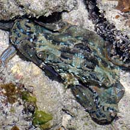 Pulau Senang, Aug 10 |
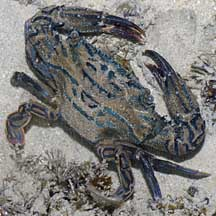 Pulau Salu, Aug 10 |
|
Acknowledgements Grateful thanks to Crabhunter for identification of some of these crabs. Links
|